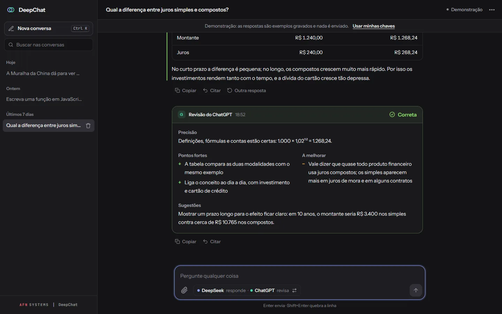

DeepChat
DeepSeek answers and ChatGPT checks the answer.


On this page: 01Why it exists
Why it exists
Ever since AI chatbots appeared, their answers haven’t always been reliable for schoolwork or work. To check, I carried one AI’s answer to another, with the same question, until the two debated it and reached a consensus. Being the messenger got tiring; DeepChat became a “WhatsApp group” with the two AIs I used most.
Problem, system, and proof
Problem
Checking an answer meant copying and pasting between two AIs.
System
A chat where DeepSeek answers and ChatGPT reviews the answer with a verdict, strengths, what to improve, and, when there is an error, a revised version. No server: everything runs in the browser.
Proof
65 tests
node --test on GitHub Actions. Checked on 9 Nov 2026.
A closer look
-
Verdict up front
Every answer gets a verdict: correct, partially correct, or incorrect.
-
Revised version
In the demo, a function that validates a CPF (Brazilian taxpayer ID) comes back partially correct because it accepts 111.111.111-11, and the review provides the corrected version. On this screen the order is reversed (ChatGPT answers and DeepSeek reviews): one click swaps who answers and who reviews.
-
No server
Questions go straight from the browser to the APIs, and API keys, if saved, are stored encrypted. The demo needs no key.
-
The review fits on a phone
Strengths, what to improve, and suggestions in a single column, with the revised version one tap away.


How it was built
Architecture
I wrote DeepChat in ES modules, with no framework, no build, and no server. app.js drives each turn: it asks one AI for the answer and hands the question and the answer to the other, which reviews it. API calls live in api-client.js, review parsing in revisao.js, and screen rendering in ui.js, with no business logic. History and preferences stay in the browser's own localStorage.
View in code: app.js L436–475 app.js L573–602 ui.js L1–7 README.md L232–254
- Question in the browser
- Streamed answer
- Other AI reviews
- Verdict on screen
- History in the browser
Technical decisions
Fixed-format review, parsed by the screen
The reviewer prompt asks for an exact format: the
Veredito:line and the sections "Accuracy", "Strengths", "To improve", "Suggestions" and, only when there is an error, "Revised version".lerRevisaosplits these parts so the screen can highlight the verdict and put each section in its place. If the model strays from the format, the whole review appears as plain text; the old format, with emojis, is also parsed.View in code: revisao.js L29–61 revisao.js L113–157 README.md L172–175
Keys encrypted with a non-exportable key
Remembering the keys is unchecked by default. When it is checked,
storage.jsencrypts both with AES-GCM using a randomCryptoKey, created as non-exportable and stored in IndexedDB;localStorageholds only the ciphertext. That way, the keys aren't readable in a backup or a copy of the browser profile. The README states the limit: code running on the same origin can still ask the browser to decrypt them.View in code: storage.js L1–18 storage.js L93–105 storage.js L136–175 README.md L129–143
AI Markdown goes through DOMPurify
The AIs' text becomes HTML through
markedand goes through DOMPurify with a closed list of tags and attributes. A hook only keepsclasson<code>with a language name, so the text can't use the app's classes, and every link opens in a new tab withnoopener noreferrer. The CSP doesn't accept'unsafe-inline'and allows connections only to the two APIs, and the libraries have pinned versions with SRI.View in code: ui.js L59–100 index.html L6–12 index.html L43–44
Challenge
A stream that drops mid-answer
The answer arrives through Server-Sent Events, and network chunks split lines in half; criarLeitorSSE keeps the remainder until the line is complete. A retry, with increasing backoff, happens only while no text has arrived. If the connection closes without [DONE] or a stop reason, the answer is treated as cut off: what arrived stays in the conversation, marked as such, and is not sent for review. Each chunk renews the 60 s timeout.
View in code: api-client.js L91–125 api-client.js L127–210 api-client.js L222–247 app.js L550–557
Testing
node --test runs 65 tests, with no dependencies. They cover review parsing, the conversation and the context sent to the APIs, the colors in code, and the pages' CSP. The stream is tested without a network, using a fake fetch that cuts the connection. The key vault runs with fake localStorage and IndexedDB and the real crypto.subtle. The demo examples are checked too. GitHub Actions runs everything on every push, on Node 24.
View in code: api.test.mjs storage.test.mjs L1–8 demo.test.mjs L36–58 csp.test.mjs testes.yml
Stack and links
Stack
JavaScript (ES modules), DeepSeek API, OpenAI API, marked, DOMPurify, Web Crypto, node:test, GitHub Actions